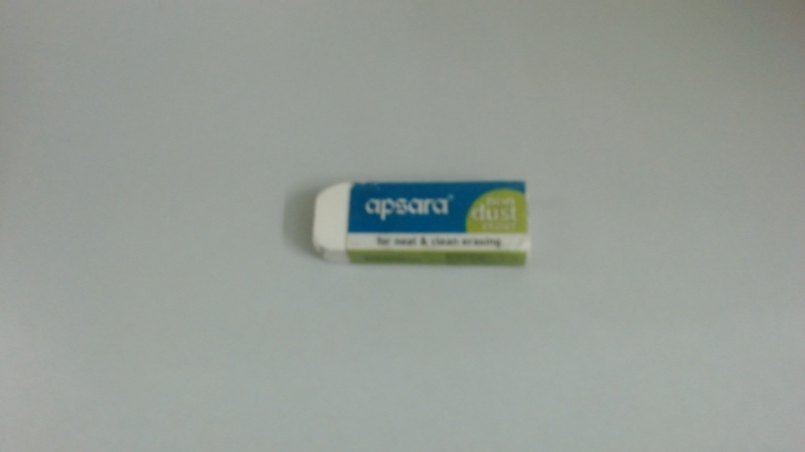
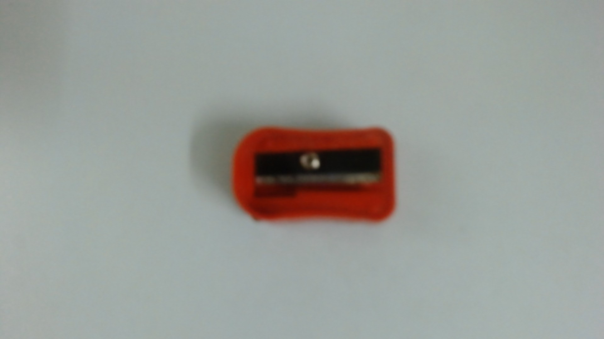
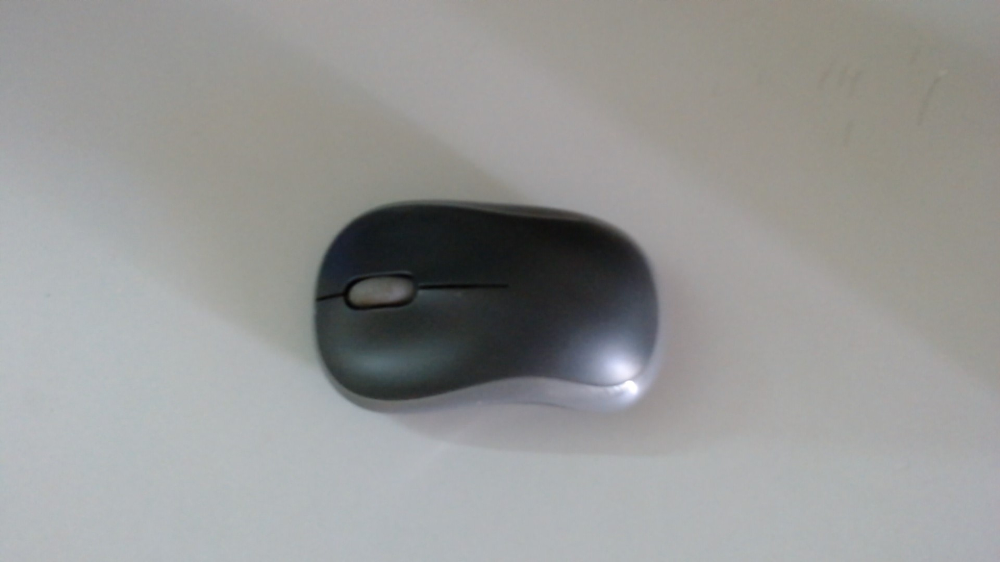

Output on Google Lens - Pilot V5 Hi-Techpoint pen
Output on MobileNet Model - Ballpoint pen
Result -
Google Lens is more accurate

Output on Google Lens - Apsara Eraser
Output on MobileNet Model - Eraser
Result -
Google Lens is more accurate

Output on Google Lens - Red Pencil Sharpener
Output on MobileNet Model - Pencil Sharpener
Result -
Google Lens is more accurate

Output on Google Lens - Logitech Computer Mouse
Output on MobileNet Model - Computer Mouse
Result -
Google Lens is more accurate